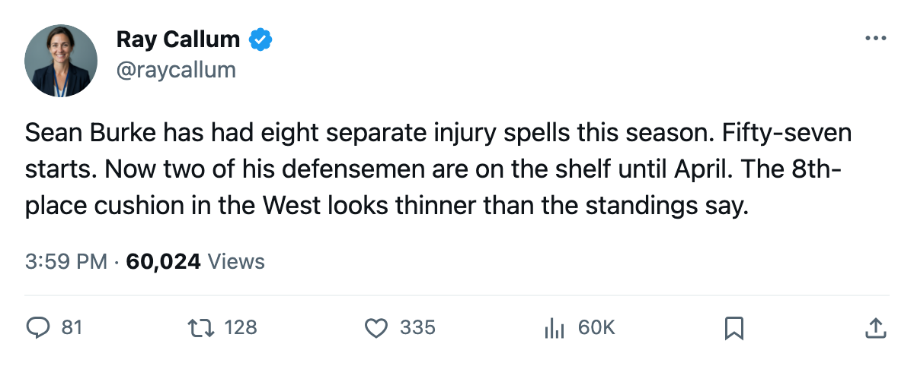
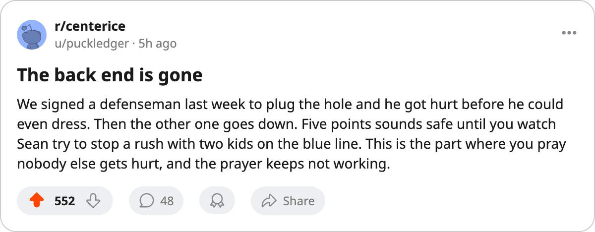

Notes from the West: Phoenix has lost two defensemen for the season and holds 8th by 5
The Coyotes signed Drake Berehowsky on March 12. He went on the injured list by March 16. Both their scratched defensemen return in April, after the last game.
 Ray CallumSenior correspondent · Home Ice Network
Ray CallumSenior correspondent · Home Ice Network
 Phoenix Coyotes sits in 8th place in the Western Conference with 74 points and 12 games remaining. The cushion over
Phoenix Coyotes sits in 8th place in the Western Conference with 74 points and 12 games remaining. The cushion over  St. Louis Blues and
St. Louis Blues and  Los Angeles Kings, both at 69, is 5 points. The cushion is shrinking because the back end is gone.
Los Angeles Kings, both at 69, is 5 points. The cushion is shrinking because the back end is gone.
 Drake Berehowsky72 was signed on March 12 to a $563,630 contract. His knee injury has an onset window between March 14 and March 16, with a return date of April 19.
Drake Berehowsky72 was signed on March 12 to a $563,630 contract. His knee injury has an onset window between March 14 and March 16, with a return date of April 19.  Ossi Vaananen73 carries an arm injury, onset between March 9 and March 11, return April 16. Both are defensemen. Both return dates fall in April, past the final games this schedule carries.
Ossi Vaananen73 carries an arm injury, onset between March 9 and March 11, return April 16. Both are defensemen. Both return dates fall in April, past the final games this schedule carries.
Phoenix has picked up 1 point from its last 2 games and carries a 2-game losing streak into a three-game home stand that starts Tuesday against Boston. First meeting this season between the clubs. Phoenix is 16-18 at home; Boston is 22-13 on the road and on a 3-game winning streak.
| Club | Pts | GP | Left | Max |
|---|---|---|---|---|
| PHX | 74 | 70 | 12 | 98 |
| STL | 69 | 69 | 13 | 95 |
| LA | 69 | 71 | 11 | 91 |
The ceiling favors Phoenix. A win-out produces 98; St. Louis tops out at 95, Los Angeles Kings at 91. But a ceiling only matters if the floor holds, and the floor has 2 fewer defensemen than it had a week ago. The trade deadline falls March 19, three days away.
In net,  Sean Burke84 has played 57 of 70 games, an 81% share. He has logged 8 separate injury spells this season, more than any other goaltender on the sheet. The arithmetic says 8th is safe. Whether the bodies in front of Burke can hold long enough for the arithmetic to work is another thing.
Sean Burke84 has played 57 of 70 games, an 81% share. He has logged 8 separate injury spells this season, more than any other goaltender on the sheet. The arithmetic says 8th is safe. Whether the bodies in front of Burke can hold long enough for the arithmetic to work is another thing.
The Coyotes won 4 in a row in late February and early March, and they had held 8th since late January. Now they face  Boston Bruins,
Boston Bruins,  Edmonton Oilers, and
Edmonton Oilers, and  Tampa Bay Lightning in their next 3 home dates with a thin blue line and a goaltender who has been lucky to stay upright all year.
Tampa Bay Lightning in their next 3 home dates with a thin blue line and a goaltender who has been lucky to stay upright all year.

